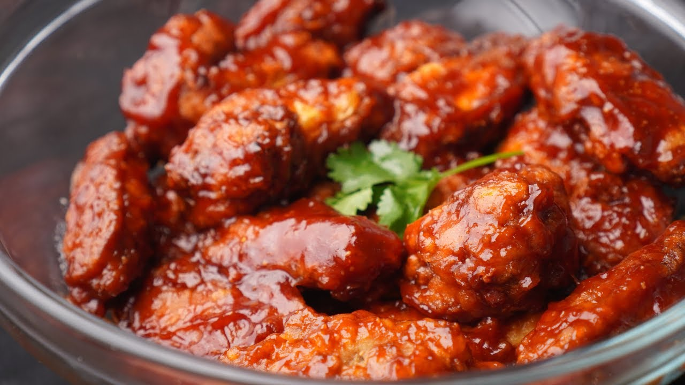

Alitas BBQ

Las alitas BBQ son un clásico de la comida rápida americana. Se preparan con pollo frito o al horno, cubiertas con una salsa barbacoa dulce y ahumada que las hace irresistibles. Son perfectas para compartir.

Las alitas BBQ son un clásico de la comida rápida americana. Se preparan con pollo frito o al horno, cubiertas con una salsa barbacoa dulce y ahumada que las hace irresistibles. Son perfectas para compartir.